Mathematical Formulation of DSteele
A 3D Spectral-Element / Finite-Layer Solution for Pavement Response under Moving Loads
DSteele Article Series · DS-02
For a print-ready version with consistently formatted equations and figures:
Purpose and Scope
DS-01 introduced DSteele from the perspective of its development, motivation, implementation, and application to moving-load and Traffic Speed Deflectometer (TSD) analysis. This companion article documents the mathematical formulation underlying the model. The derivation that follows is retained from my original, unpublished DSteele formulation manuscript with only the surrounding context reorganized for this article.
The purpose of DS-02 is not to reproduce the DSteele source code. Rather, it is to document the mechanics and mathematical structure of the solution: the governing equations, transformation to the wavenumber domain, spectral-element stiffness formulation for finite layers and the semi-infinite halfspace, treatment of elastic and viscoelastic properties, global assembly, moving surface loading, and inverse-transformation of the response back to the physical domain.
Mathematical Development of DSteele
As indicated in one of my previous LinkedIn posts (original LinkedIn post), I derived the mathematical derivation of DSteele by hand. The hand-written derivation extended across more than twenty pages and included the displacement-potential solution, evaluation of displacement and stress components at layer boundaries that were ultimately used to construct the spectral-element stiffness matrix.
Development of the formulation was iterative. Because an error discovered late in the derivation could propagate into the layer stiffness matrices, portions of the derivation were restarted and checked repeatedly before being translated into code. The photographs below preserve part of that original development record. They are included as technical provenance for the formulation, not as a substitute for the mathematical development that follows.
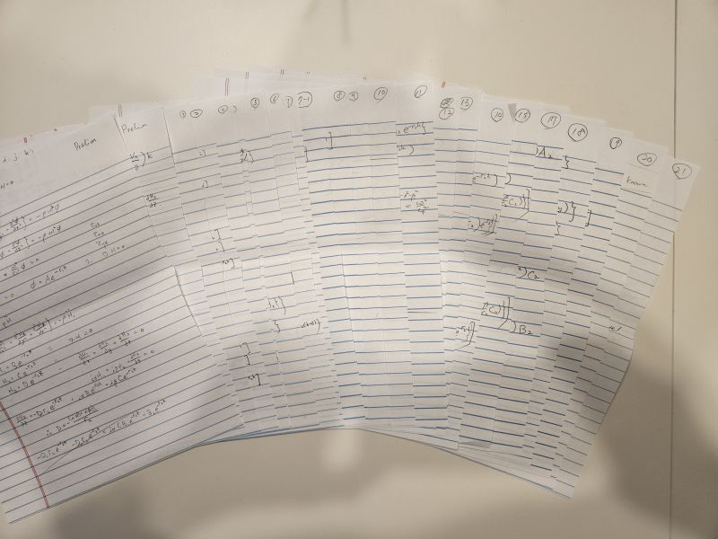
Figure 1. Original handwritten derivation developed during the formulation of DSteele. The derivation progressed from the governing equations and displacement potentials through finite-layer displacement and stress relationships used to construct the spectral-element stiffness matrices.
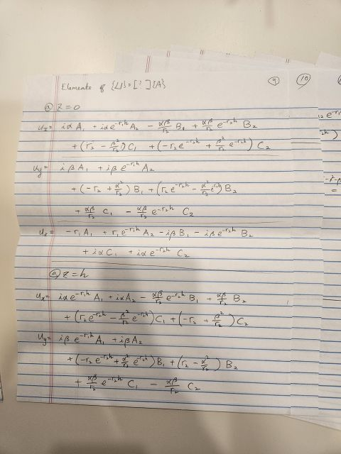
Figure 2. Close-up from the original handwritten development of the finite-layer displacement relationships, including evaluation of displacement components at the upper and lower layer boundaries prior to their organization in matrix form.
Detailed DSteele Formulation
The formulation proceeds from the three-dimensional equations of motion for an elastic, homogeneous continuum. Helmholtz decomposition is then used to express the displacement field in terms of scalar and vector potentials. For a load moving at constant speed, the solution is written in a two-dimensional Fourier representation so that derivatives with respect to space and time can be handled algebraically in the transformed domain.
The resulting harmonic solutions are used to derive stiffness matrices for two-noded finite-thickness layers and a one-noded semi-infinite element. Elastic or viscoelastic layer properties are incorporated into those element relationships, after which the individual elements are assembled into the global pavement system. The transformed nodal response is solved for each wavenumber pair and subsequently transformed back to obtain the pavement response associated with the moving load. Details of DSteele formulation is provided in the following.
Formulation of DSteele
Governing Equations
The formulation of DSteele starts with the classical equation of motion for an elastic, homogeneous continuum without body forces. In terms of the displacement vector, u, the equation is given as the following.
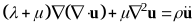
(1)where λ and μ are the lamé constants, and ρ is the mass density of the material. The stresses of an isotropic material satisfying the governing equation shown above, are given by the generalized Hooke’s law written as the following.
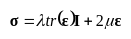
(2)where Ι is the identity tensor and ε is the strain tensor given as the following.
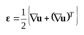
(3)In a cartesian coordinate system such as the one shown in Figure 3, Equation (1) represents a complicated system of partial differential equations that need to be solved for three components of the displacement vector (i.e., ux, uy, uz). As pointed out by Graff (1991), Equation (1) can be decoupled into a more simpler form by means of the Helmholtz decomposition given as the following.
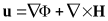
(4)where Φ represent a scalar potential and H is a vector potential whose divergence vanishes. In other words, the following condition must hold for the vector potential H.
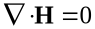
(5)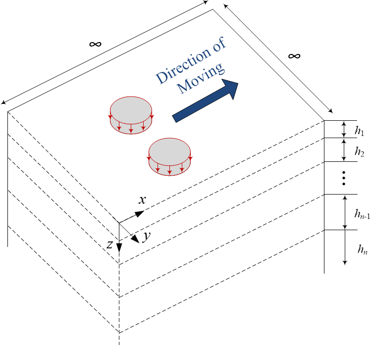
Figure 3. Cartesian Coordinate System with Multiple Layers on a Halfspace
Substituting Equation (4) into Equation (1), one arrives at the following decoupled equations for Φ and H.
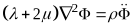
(6)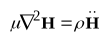
(7)Similar to the solutions provided by Siddharthan et. al. (1998, 2000) and Nielsen (2019), the solutions of the above equations under a load moving at a constant speed, V, can be written in the form of an inverse Fourier Transform. More specifically, the solutions for the scalar and the vector potentials are written as the following.
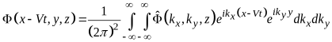
(8)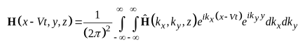
(9)where
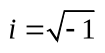
,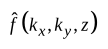
is the 2-dimensional (2D) Fourier transform of the function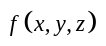
along the x and y axes, and kx and ky are the wave numbers along their respective axes.The primary advantage of writing the solutions in the form of Equations (8) and (9) is that the partial derivatives with respect to x, y, and t reduce to simple algebraic multiplications. For example, by denoting the Fourier transform pairs as
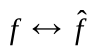
, it is easily seen from Equation (8) that the partial derivative of Φ with respect to x, is obtained as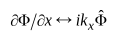
. Therefore, the solution of the above equations can be obtained more conveniently in the transformed domain (i.e., wave number or frequency domain).In the frequency domain, the components of the displacement vector u can be written as the following in terms of the potentials.
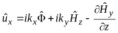
(10)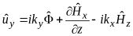
(11)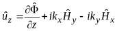
(12)where
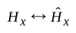
,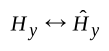
, and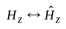
are the x, y, and z components of the vector potential H, respectively.Solutions for Harmonic Potentials
In order to solve for the harmonic components of
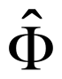
and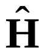
in Equations (8) and (9), it is first necessary to transform Equations (6) and (7) into the same wave number or frequency domain. For the scalar potential Φ, transforming Equation (6) into the frequency domain results in the following.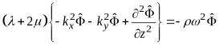
(13)where
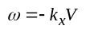
. The above equation can be rewritten in the form of a classical wave equation as: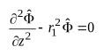
(14)where
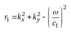
(15)and
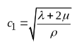
(16)After dropping the term corresponding to the stress wave propagating in the negative z axis, the solution for the scalar potential is obtained as the following (Ewing et. al. 1957; Graff 1991).
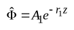
(17)where A1 is an arbitrary constant.
Similarly, one arrives at the following wave equation for the vector potential H, by following the same procedure shown above.
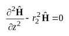
(18)where
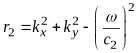
(19)and
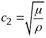
(20)The solution for each component of H is obtained as the following, after dropping the terms that result in the unbounded results.
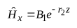
(21-1)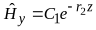
(21-2)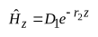
(21-3)where B1, C1, and D1 are arbitrary constants.
Stiffness Matrix of a Two-Noded Element with Finite Thickness
The solution for the scalar potential shown in Equation (17) and those for the vector potential shown in Equation (21) only account for the stress waves propagating in the positive z-direction (i.e., downwards, see Figure 3). However, for a layer with finite thickness, h, the stress wave not only propagates downwards, but also upwards due to the reflection and refraction at the lower boundary. To account for the waves propagating upwards from the lower boundary, another term is added to the right-hand side of Equations (18) and (21) (Al-Khoury et. al., 2001; Lee, 2013a; Lee, 2013b). Thus, the solution for the scalar potential is written as the following.
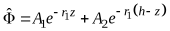
(22)where A1 and A2 are arbitrary constants. Similarly, the solution for the vector potential is written as:
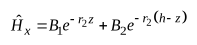
(23-1)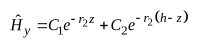
(23-2)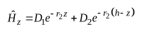
(23-3)where Bj, Cj, and Dj (j = 1, 2) are arbitrary constants. Substituting the above equation into the divergence condition of H, i.e., Equation (5), one arrives at the following expression for the arbitrary constants of
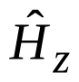
.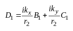
(24-1)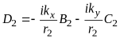
(24-2)By substituting Equations (22) through (24) into Equations (10) through (12), the displacements are obtained as the following.
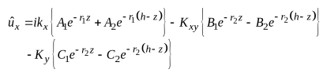
(25)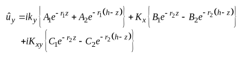
(26)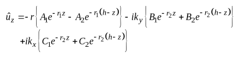
(27)where
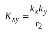
(28)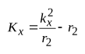
(29)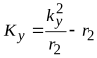
(30)The equations for the relevant stresses are obtained by substituting Equation (3) into Equation (2), then taking the Fourier transform with respect to x and y. Substituting Equations (25) through (30) into the resulting equations yields the following.
(31)
(32)
(33)
where
(34)
(35)
(36)
To construct the stiffness matrix of a layer with finite thickness, h, it is necessary to obtain the displacements and the stresses at the upper and lower boundaries. For the displacements, this is achieved easily by substituting z = 0 for the upper boundary and z = h for the lower boundary in Equations (25) through (27). The resulting displacements are obtained as the following in matrix form.
(37)
where and . , , and are the displacements at the upper boundary along the x, y, and z axes, respectively, and , , and are their counterparts at the lower boundary. The matrix S1 is given as:
(38)
where
(39)
(40)
Similarly, substituting z = 0 for the upper boundary and z = h for the lower boundary in Equations (31) through (33) yields the following for the stresses in matrix form.
(41)
where in which the subscripts 1 and 2 indicate the corresponding stresses at the upper and lower boundaries, respectively. The matrix S2 is given as:
(42)
With the matrices S1 and S2 defined as the above, the stiffness matrix of a layer with finite thickness (i.e., the stiffness matrix of a two-noded element, with one node at the upper boundary and the other at the lower boundary) is obtained by relating the nodal displacements to boundary tractions. In other words, the stiffness matrix is obtained from:
(43)
in which the stiffness matrix, S2-noded, is given as the following.
(44)
where
(45)
Stiffness Matrix of a One-Noded, Semi-Infinite Element
An example of the one-noded, semi-infinite element (i.e., a halfspace element) was schematically shown as the bottom layer in Figure 3. Obviously, the one-noded element only has a single boundary at the top of the layer. In other words, this element does not have a lower boundary from which the stress waves can reflect and refract back to the upper boundary. Therefore, the stiffness matrix of a semi-infinite element can be obtained in the same manner as the two-noded element without the terms that govern the stress waves propagating upwards [i.e., A2 = B2 = C2 = D2 =0 in Equations (22) and (23)].
Following the same mathematical procedure previously shown for the two-noded element, one arrives at the following for the stiffness matrix of a one-noded element.
(46)
where the matrices S3 and S4 are obtained from the displacement and stress functions as shown below.
(47)
(48)
Incorporating Elastic and Viscoelastic Layer Properties
For an elastic material whose stiffness characteristics are time-independent, the lamé constants can easily be obtained from the Young’s modulus, E, and the Poisson’s ratio, ν. From the classical theory of elasticity, these relationships are given as:
(49)
(50)
However, as indicated Rizzi (1989) who introduced the spectral element solution approach for layered media, it is recommended that a small amount of damping be added to the lamé constants, since no realistic material is purely elastic. In classical soil dynamics, this is achieved by adding an imaginary, hysteretic damping to the material functions (Siddharthan et. al. 1998, 2000). In other words, the complex lamé constants with damping are given as the following:
(51)
(52)
where ζ is a damping constant.
The modulus of a viscoelastic material such as Asphalt Concrete (AC) is time (or equivalently, frequency) dependent. A well-known model for the time-dependent viscoelastic modulus is given in terms of a sigmoidal function of the following form.
(53)
where E(t) is the time dependent, viscoelastic relaxation modulus at time t, and c1 through c4 are model constants. Similarly, the frequency-dependent viscoelastic modulus model is often written as the following.
(54)
where |E*| is the dynamic modulus which is simply the amplitude of the complex modulus E* = E’ + iE”, f is the frequency, and d1 through d4 are model constants.
Although Equation (54) may seem more natural and adequate than Equation (53) for use with the complex stiffness matrices previously derived in the frequency domain, one drawback of Equation (54) is that the real and imaginary parts of the complex modulus (E’ and E”, respectively) needed for these stiffness matrices cannot be obtained without the knowledge of phase angle at different frequencies (note that Equation (54) does not include any phase angle information). A feasible workaround for finding E’ and E” from Equation (54) is through the Prony series representation of the complex modulus in which E’ and E” are written as the following.
(55-1)
(55-2)
where E0 and Ei are the Prony coefficients, M is the number of Prony elements, and ρi is the relaxation time for the ith Prony element. From the above, the frequency dependent dynamic modulus can be written as:
(56)
To determine the Prony coefficients, it is necessary to fit the dynamic modulus expressed in the form of Equation (56) to those obtained from Equation (54). However, due to the complicated nature of Equation (56), this process involves a Nonlinear Least Squares (NLS) approach which requires iteration over the objective function (which minimizes the error between the |E*| values from Equation (56) and those from Equation (54)), starting from a reasonable set of seed values (i.e., initial guess) for the Prony coefficients (Lee, 2022).
However, the above NLS process was not desired for use with the spectral element solution developed in this study, primarily for two reasons. First, the |E*| obtained in the form of Equation (56) depends on the seed values, i.e., using a different set of seed values may result in different |E*| values which in turn, may result in different responses obtained from the spectral element solution. Second, the NLS requires iteration which increases the runtime of the implemented algorithm, and the increase in runtime is not expected to be consistent (as the NLS may need different number of iterations before converging, depending on the seed values).
Due to the above challenges with determining the Prony coefficients from |E*|, an alternate method was adopted for implementation. Rather than finding the Prony coefficients from the frequency-dependent functions [i.e., Equations (54) and (56)], these coefficients were determined by fitting the Prony series representation in time-domain to the relaxation modulus represented in Equation (53). The time-domain Prony series model for the relaxation modulus is given as the following.
(57)
Obtaining the Prony coefficients from Equation (57) is carried out by fitting the E(t) in this equation to those obtained from Equation (53). Due to the simple form of Equation (57), this fitting process can be achieved through a Linear Least Squares (LLS) rather than a NLS. More specifically, the LLS reduces to a set of linear algebraic equations that can be written as the following in matrix form (See Lee, 2022 for a detailed derivation and proof).
(58)
where
(59)
(60)
and tk (k = 0, 1, 2, …, n) is the discrete time values at which the value of E(t) is obtained from Equations (53) and (57) for LLS. As seen from Equation (58), the LLS does not require any iterations (i.e., it is solved by inverting the matrix M once) and does not require nor depend on any seed values (i.e., initial guess).
Once the Prony coefficients are obtained from Equation (58), the real and imaginary parts of the complex modulus (E’ and E”, respectively) needed for the spectral element solution can easily be obtained from Equation (55).
Global Stiffness Matrix and Nodal Displacements
Using the element stiffness matrices derived previously, the global stiffness matrix, SGlobal, is constructed in a manner similar to the Finite Element Method (FEM) (Al-Khoury et. al., 2001; Lee, 2013a, 2013b). The global stiffness matrix is a (3∙n+3) by (3∙n+3) square matrix (n = total number of layers) whose constructional schematics are shown in Figure 4(a) for pavements with a halfspace and in Figure 4(b) for those with a shallow bedrock. In Figure 4, any region that is overlapped by two distinct element stiffness matrices indicate the components of the respective element matrices are summed. Additional details regarding the global stiffness matrix construction can be found in Al-Khoury et. al. (2001) and Lee (2013a, 2013b), and shall not be repeated herein.
(a)
(b)
Figure 4. Global Stiffness Matrix Construction for Pavement Structures (a) with a Halfspace and (b) without a Halfspace (i.e., shallow bedrock)
Once the global stiffness matrix is constructed, the displacements at every node of the pavement structure can be found simply by inverting the stiffness matrix. In other words:
(61)
where
(62)
is the global displacement vector, and , , and are the x, y, and z components of the displacement at the ith node, respectively. Similarly, the global force vector is given as the following.
(63)
where and are the applied shear stresses in the zx and yz planes, respectively, and is the applied normal stress in the z direction, all of which are at the ith node.
For pavements that are only subjected to the vertical load at the pavement surface, the only non-zero component of in Equation (63) is the normal component , which can be obtained easily by taking the forward Fourier transform of the applied pressure at the pavement surface, p(x, y). Mathematically, this is written as the following.
(64)
Time-Domain Response
Note that the global displacement vector obtained from Equation (61) is still in the transformed domain. As discussed previously, the advantage of working in the transformed domain is that the partial derivatives in the physical domain are represented as algebraic multiplications in the transformed domain.
More specifically, because the deflection slope with respect to x at the pavement surface is represented as , its frequency domain counterpart is simply obtained as . Both the deflection and deflection slope can then be brought back to the physical domain through the respective 2D inverse Fourier transforms as shown in the following equations.
(65)
(66)
From Formulation to DSteele
The preceding derivation provides the mathematical foundation implemented in DSteele. At the element level, each finite pavement layer is represented by a stiffness matrix in the frequency domain, while the bottom layer can be represented directly as an element of finite thickness or a semi-infinite element. These element relationships are assembled into the global pavement system in a manner analogous to finite-element assembly.
For a specified moving load, the surface traction is represented in the same transformed domain as the pavement system. Solving the global system provides nodal displacements in the frequency domain. The inverse transformation then returns the response back to physical domain, allowing the model to describe the pavement response produced by a load traveling at a prescribed constant speed.
Response Quantities and TSD Applications
Although the formulation is developed in terms of the full three-dimensional displacement and stress fields, DSteele was developed with moving-deflection applications as a central motivation. Vertical surface deflection is obtained naturally from the nodal displacements, and the deflection slope needed for Traffic Speed Deflectometer (TSD) analysis is also obtained easily as its derivative.
Relationship to the DSteele Series
DS-01 provides the development history and engineering overview of DSteele. DS-02 documents the underlying mathematical formulation. A subsequent article will address DSteele V2 and the computational changes used to accelerate the original implementation. Additional articles can then treat TSD measurement and integration, direct deflection-slope backcalculation, dimensional analysis, and the DSteele machine-learning surrogate without repeatedly reproducing the derivation presented here.
REFERENCES
Al-Khoury, R., Scarpas, A., Kasbergen, C., and Blaauwendraad, J. 2001. Spectral Element Technique for Efficient Parameter Identification of Layered Media. I. Forward Calculation. International Journal of Solids and Structures. 38: 1605-1623.
Applied Research Associates (ARA). 2004. Guide for Mechanistic-Empirical Design of New and Rehabilitated Pavement Structures. NCHRP Project 1-37A, Final Report, National Cooperative Highway Research Program, Transportation Research Board, National Research Council, Washington, D.C.
Ewing, W. M., Jardetzky, W. S., and Press, F. 1957. Elastic Waves in Layered Media. McGraw-Hill Book Company. NY.
Graff, K. 1991. Wave Motion in Elastic Solids. Dover Publications, Inc. NY.
Lee, H. S. 2013(a). Viscowave – A New Solution for Viscoelastic Wave Propagation of Layered Structures Subjected to an Impact Load, International Journal of Pavement Engineering, DOI:10.1080/10298436.2013.782401.
Lee, H. S., 2013(b). Development of a New Solution for Viscoelastic Wave Propagation of Pavement Structures and its Use in Dynamic Backcalculation. Ph.D. Dissertation. Michigan State University, East Lansing, MI.
Lee, H. S. 2022. ViscoWave Documentation and User Guide. https://github.com/leehyu20/ViscoWave/blob/main/ViscoWave_User_Guide_Sept%202022.pdf.
Nielsen, C.P. 2019. Visco-Elastic Back-Calculation of Traffic Speed Deflectometer Measurements. Transportation Research Record, Vol. 2673, No. 12. DOI: https://doi.org/10.1177/0361198118823500.
Siddharthan, R.V., Yao, J., and Sebaaly, P. 1998. Pavement Strain from Moving Dynamic 3D Load Distribution. Journal of Transportation Engineering, Vol. 124, No. 6. DOI: https://doi.org/10.1061/(ASCE)0733-947X(1998)124:6(557).
Siddharthan, R.V., Krishnamenon, N., and Sebaaly, P. 2000. Finite-Layer Approach to Pavement Response Evaluation. Transportation Research Record, Vol. 1709, No. 1. DOI: https://doi.org/10.3141/1709-06
Download DS-02
A print-ready PDF version of this technical article, with consistently formatted equations and figures, is also available: